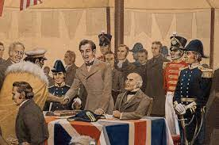
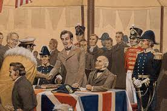

Introduction to the Treaty of Waitangi
The Treaty of Waitangi is the founding document of our country. Maori agreed: to let other people live in their country; and. to let the British make rules about behaviour and see that everyone obeys them.The Treaty of Waitangi is New Zealand's founding document. It takes its name from the place in the Bay of Islands where it was first signed, on 6 February. The Treaty of Waitangi is the founding document of our country. Maori agreed: to let other people live in their country; and. to let the British make rules about behaviour and see that everyone obeys them.The three “P's”, as they are often referred to, are the principles of partnership, participation and protection. These underpin the relationship between the Government and Māori under the Treaty of Waitangi. They are used to bridge the gap between the literal differences between the Māori and English texts.The Treaty of Waitangi, sometimes referred to as Te Tiriti, is a document of central importance to the history of New Zealand, its constitution, and its national mythos.

 
